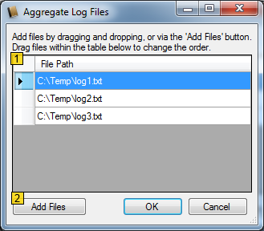

The aggregate files interface allows a set of files to be treated as though they are a single
file. In many long running systems it is common to use "log roll over" where periodically the
system starts a new log file with a sequentially numbered file name. When reviewing the data
contained in these files it is often inconvenient to have to load each file separately.
Searching for specific log entries can also be difficult.
RyLogViewer's aggregate files feature aims to solve these issues by